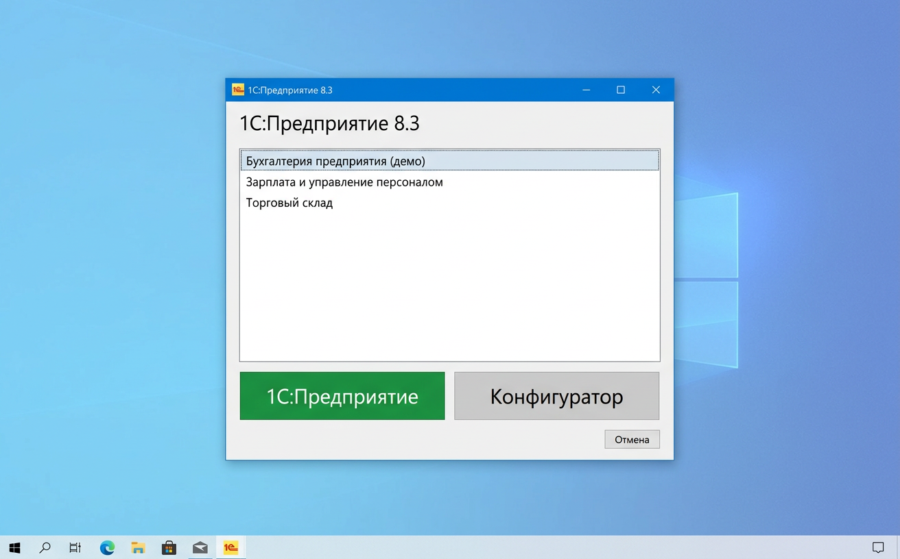
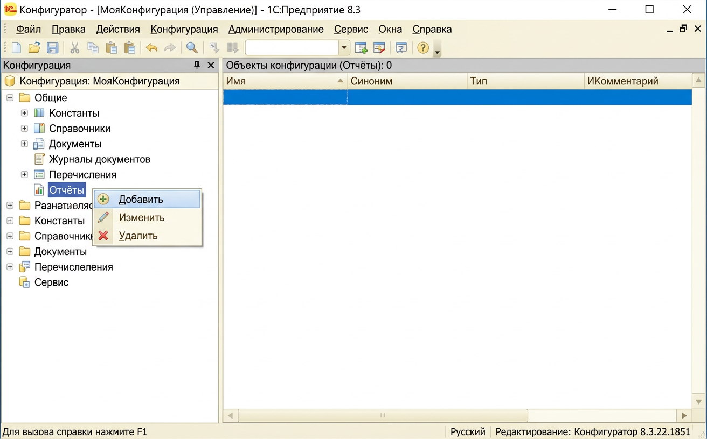
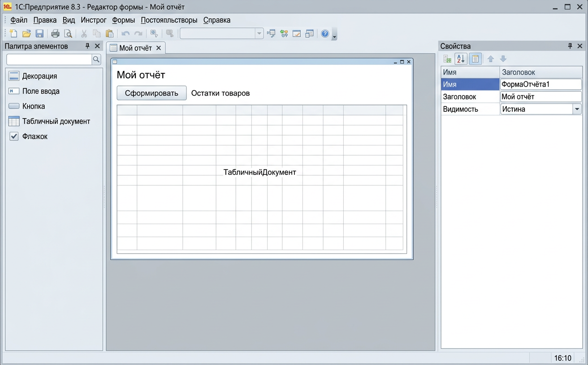
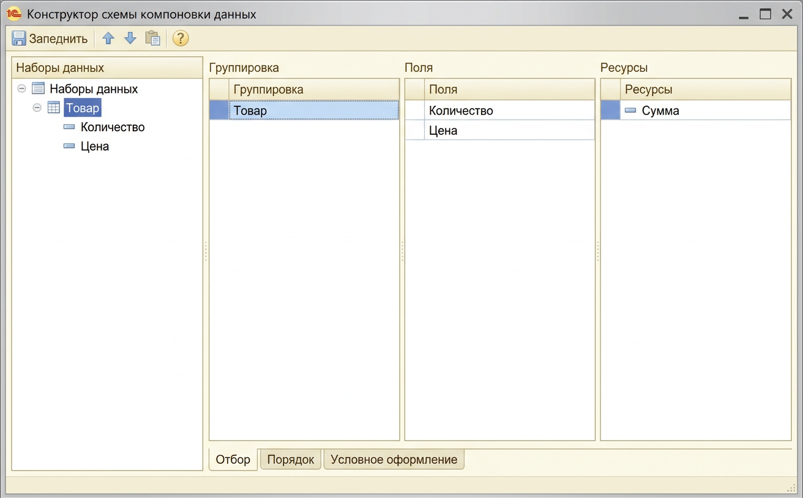
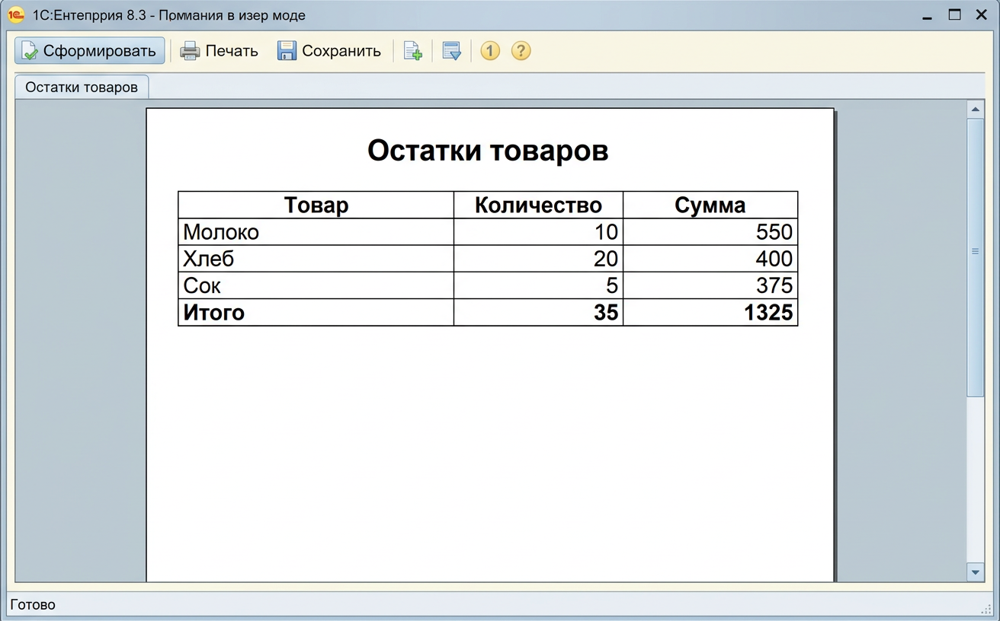
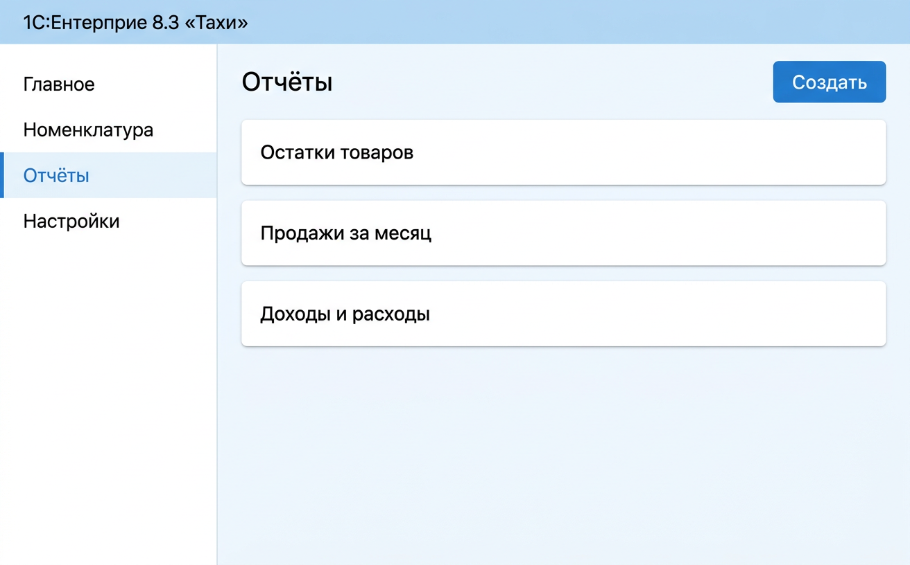
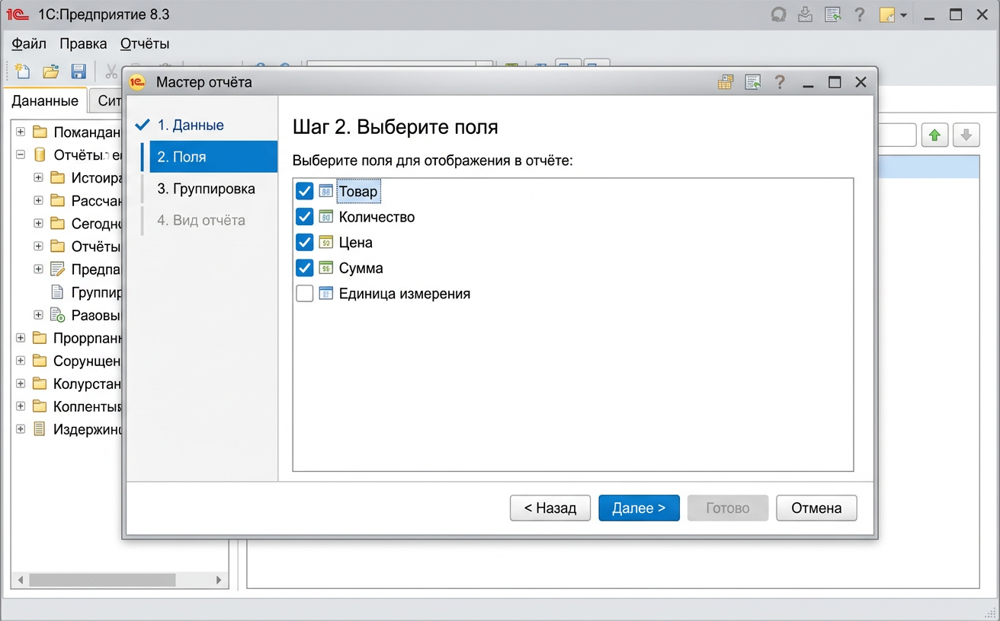
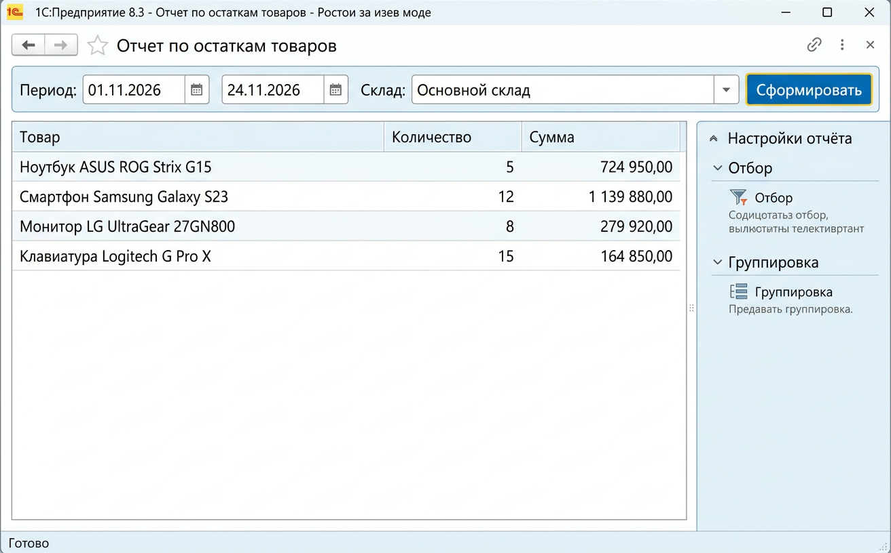
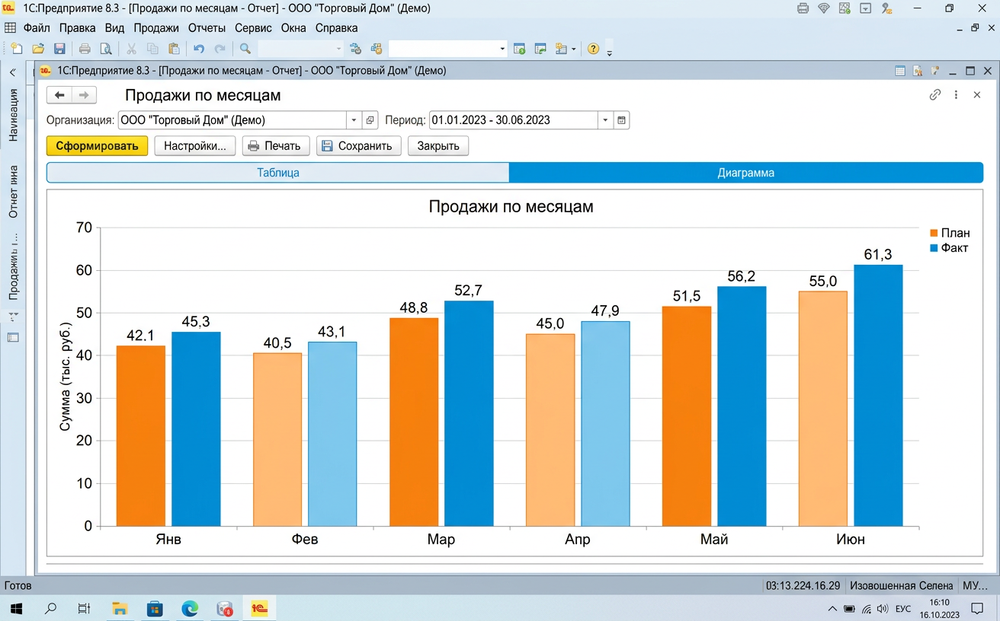

1. Что такое отчёт?
Отчёт — это готовый ответ на вопрос, который ты задал компьютеру.
Представь классный журнал. Учитель видит все оценки сразу: кто отличник, кто двоечник. Отчёт в 1С делает то же самое, только для работы: считает товар на складе, деньги в кассе, посетителей в библиотеке.
Таблица
Строки и столбцы. Например: Товар — Количество — Сумма. Самый частый вид отчёта.
Диаграмма
Красивые столбики или кривые. Сразу видно, где больше, а где меньше.
Итоги
Главное число в конце: сколько всего товаров, сколько всего денег.
2. Два режима 1С: две двери
В 1С 8.3 есть два «режима». Это как две двери в одну школу: в одной учителя готовят уроки, в другой проходит урок.
Конфигуратор
Мастерская программиста. Здесь отчёт создают и настраивают: рисуют формы, собирают данные. Этим занимаются разработчики — но ты тоже можем заглянуть!
1С:Предприятие
Витрина для пользователя. Здесь отчёт используют: выбирают период, нажимают «Сформировать», печатают. Обычные работники сидят именно здесь.

| Что сравниваем | 🔧 Конфигуратор | 👤 1С:Предприятие |
|---|---|---|
| Кто пользуется | Программисты (и ты — на уроке!) | Обычные пользователи |
| Что делают с отчётом | Создают, рисуют форму, настраивают данные | Открывают, настраивают отбор, формируют и печатают |
| Можно ли «сломать» | Да, если нажимать не то — будь осторожен | Нет: здесь почти всё защищено |
| Главное слово | «Создать» | «Сформировать» |
3. Наш план: отчёт «Остатки товаров»
За учебник мы сделаем один и тот же отчёт двумя способами. Он отвечает на вопрос: «Сколько какого товара осталось на складе и сколько это стоит?»
| Столбец отчёта | Что означает | Пример |
|---|---|---|
| Товар | Название | Молоко |
| Количество | Сколько штук | 10 |
| Сумма | Количество × Цена | 550 руб. |
Часть 1
Создаём отчёт в Конфигураторе: дерево объектов, форма, данные (СКД).
Часть 2
Пользуемся отчётом в 1С:Предприятии: мастер, «Сформировать», диаграмма, печать.
4. Часть 1. Отчёт в Конфигураторе
Внимание: сейчас мы в «мастерской». Здесь рождаются отчёты. Не бойся — шаг за шагом всё получится!
Открываем Конфигуратор
Запусти 1С 8.3. В окне запуска нажми кнопку «Конфигуратор» (серую). Откроется окно с большим деревом — это дерево всей «начинки» программы.
В дереве находим раздел «Отчёты»
Слева в дереве найди папку «Отчёты». Нажми на неё правой кнопкой мыши → выбери «Добавить». Появится новый отчёт — например, с именем Отчёт1.
Сразу переименуй его в МойОтчёт и впиши синоним (человеческое название) «Остатки товаров».

МойОтчёт). Синоним — название для людей (можно по-русски: «Остатки товаров»).
Рисуем форму отчёта
Открой основную форму нового отчёта — перед тобой появится «холст» и палитра элементов. Перетащи на форму:
• ТабличныйДокумент — большое белое поле, где будет жить сама таблица;
• Кнопку с подписью «Сформировать»;
• Декорацию (надпись) «Остатки товаров» — заголовок.

КнопкаСформировать).
Готовим данные: конструктор СКД
Теперь — «кухня» отчёта. У отчёта включается схема компоновки данных (сокращённо СКД). Это как рецепт: из чего и как варить отчёт.
Открой конструктор и добавь:
• Поля (что показываем): Товар, Количество, Цена;
• Группировку: по полю «Товар»;
• Ресурс (что считаем): Сумма = Количество × Цена.

Сохраняем и обновляем базу
Всё настроено? Нажми Ctrl + S (или меню Файл → Сохранить конфигурацию). Потом запусти режим «1С:Предприятие» — база сама спросит: «Обновить конфигурацию?» → жми «Да».
Проверяем: смотрим отчёт глазами
В 1С:Предприятие открой наш отчёт «Остатки товаров» и нажми кнопку «Сформировать». Если всё верно — появится аккуратная таблица: Товар, Количество, Сумма. 🎉

Если пусто или ошибка — возвращайся в Конфигуратор и проверяй шаги 3–4: все ли поля добавлены, есть ли кнопка «Сформировать».
5. Часть 2. Отчёт в пользовательском режиме
Теперь ты — обычный пользователь. Конфигуратор закрыт, «мастерская» заперта. Осталось только пользоваться готовым отчётом… или создать новый — с помощью мастера!
Открываем 1С:Предприятие
В окне запуска жми зелёную кнопку «1С:Предприятие». Откроется привычный интерфейс — кнопки, списки, разделы. Здесь ничего не сломается, можно спокойно пробовать.
Идём в раздел «Отчёты»
В меню (слева или на главной) найди раздел «Отчёты». Там лежат готовые отчёты — как книги на полке. Нажми «Создать», чтобы сделать новый.

Проходим мастер отчёта (4 шага)
Мастер — как навигатор в телефоне: он спрашивает по шагам, а ты отвечаешь.
• Шаг 1. Данные — откуда берём цифры (например, из склада);
• Шаг 2. Поля — что показать (ставим галочки: Товар, Количество, Цена, Сумма);
• Шаг 3. Группировка — как разложить (например, по товару);
• Шаг 4. Вид — таблица или диаграмма.

Нажми «Готово» — мастер соберёт отчёт за тебя!
Настраиваем отборы и жмём «Сформировать»
Вверху отчёта живут настройки: период (какие даты), склад, организация. Выбери, например, «за ноябрь 2026» → нажми «Сформировать». Таблица обновится.

Превращаем таблицу в диаграмму
Хочется красоты? Найди переключатель «Таблица / Диаграмма» (или кнопку «Вставить диаграмму»). Столбики сразу покажут: где больше, где меньше. Такие отчёты любят начальники 😄

Печатаем и сохраняем
Отчёт готов? Осталось его «унести с собой»:
• Печать — значок принтера 🖨 (или Ctrl + P);
• Сохранить — значок 💾 → выбери «Таблица Excel» или «Документ PDF»;
• Внешний отчёт (файл .epf) — Файл → Открыть → Внешний отчёт: так передают отчёты друг другу, без Конфигуратора.
6. Три вида отчётов
Чтобы не запутаться, запомни три «вида» отчётов в 1С 8.3:
Встроенный
Живёт внутри конфигурации. Создали в Конфигураторе — все пользователи его видят. Как школьная библиотека: одна на всех.
Внешний (.epf)
Отдельный файл-«чемоданчик». Можно переслать другу или принести на флешке и открыть через Файл → Открыть.
Отчёт на СКД
Гибкий отчёт: данные описываются «рецептом» (схемой). Пользователь сам двигает поля — как конструктор из деталей.
7. Советы бывалого
Сначала думай — потом жми
Прежде чем нажать «Удалить» в Конфигураторе, спроси: «А точно ли мне это нужно?»
Сохраняйся часто
Ctrl+S — твой лучший друг. Компьютер может зависнуть, а сохранённое не потеряется.
Маленькими шагами
Не пытайся сделать всё сразу. Один шаг → проверил → следующий шаг.
Читай подписи
Все кнопки в 1С подписаны по-русски. Читай — и не заблудишься.
Ошибка — это нормально
Даже программисты ошибаются 10 раз, прежде чем получится. Откати шаг и попробуй снова.
Сравнивай с образцом
Открыл учебник → посмотри на скриншот → сделай то же самое у себя. Сверяй глазами.
8. Задания и мини-тест
Практика (сделай руками)
Открой 1С 8.3. Сначала кнопку «Конфигуратор», закрой. Потом кнопку «1С:Предприятие», закрой. Ответь: чем отличались два окна?
В Конфигураторе создай отчёт с именем МойПервыйОтчёт и синонимом «Мои оценки». Добавь в него поля: Предмет, Оценка, Дата. Сохрани (Ctrl+S).
В 1С:Предприятие пройди мастер отчёта до конца: выбери данные, поставь 3 галочки в полях, выбери вид «Диаграмма», нажми «Готово» и «Сформировать». Сделай скриншот.
Придумай свой отчёт для школьной столовой: «Что кушали в столовой на этой неделе». Напиши 3 столбца и 1 строку-пример. Оформи в тетради.
Мини-тест (нажми, чтобы увидеть ответ)
❓ Вопрос 1. Где создают новые отчёты: в Конфигураторе или в 1С:Предприятии?
❓ Вопрос 2. Что нажимают, чтобы отчёт собрался и показал таблицу?
❓ Вопрос 3. Что такое СКД?
❓ Вопрос 4. Какой файл называют «внешним отчётом»?
.epf. Его можно переслать другу и открыть через Файл → Открыть → Внешний отчёт.❓ Вопрос 5. Как превратить таблицу отчёта в столбики?
9. Словарик
Выучи эти 10 слов — и ты уже не новичок!
- 1С:Предприятие
- Режим, где пользователь работает с готовыми данными: открывает документы, справочники и отчёты.
- Конфигуратор
- Режим разработчика: здесь создают и меняют саму конфигурацию — в том числе отчёты.
- Конфигурация
- «Начинка» 1С: все справочники, документы, отчёты и правила одной программы (например, «Бухгалтерия»).
- Отчёт
- Готовый ответ на вопрос: таблица, диаграмма или итоги, собранные из данных.
- Форма
- Экран, на котором показан отчёт: кнопки, надписи и большое поле для таблицы.
- ТабличныйДокумент
- Элемент формы, в котором живёт сама таблица отчёта — сюда «выезжает» результат.
- СКД (схема компоновки данных)
- «Рецепт» отчёта: данные, группировка, ресурсы и оформление.
- Поле
- Одна колонка данных: Товар, Количество, Цена.
- Ресурс
- Число, которое отчёт считает: сумма, количество, итог.
- Сформировать
- Кнопка, после которой отчёт собирается и показывает результат.
- Внешний отчёт (.epf)
- Отдельный файл с отчётом, который можно перенести в другую базу или отправить другу.
- Отбор
- Фильтр: показать только то, что выбрал (например, только молоко или только ноябрь).